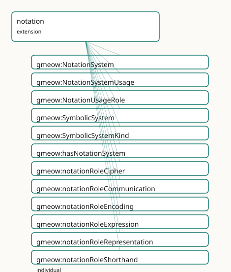

GMEOW Notation and Symbolic Systems Module
- IRI: https://blackcatinformatics.ca/gmeow/slices/notation
- Tier: extension
Group: extensions
What This Slice Covers
This slice owns 31 terms and contributes 7 mapping or projection rows. Use it when its terms match the native fact you want to preserve; use the linkage tables to see how those facts leave GMEOW for consumer vocabularies.
Dependencies
Consumers
- Symbolic/notation systems for the language family and the music slice's projections.
Local Map

Terms
Classes
| Term | Label | Definition |
|---|---|---|
gmeow:NotationSystem |
Notation System | A structured symbolic system with defined rules for representing information in a specific domain — mathematical notation, musical notation, stenography, phone... |
gmeow:NotationSystemUsage |
Notation System Usage | A reified, role- and period-scoped use of a notation system by an entity — an observation in the universal claim stack: the gufo:Relator binding {entity}... |
gmeow:NotationUsageRole |
Notation Usage Role | The role a notation system plays in a specific usage — a value, never an Entity subclass. Open-ended: new analytical frameworks may introduce further roles wit... |
gmeow:SymbolicSystem |
Symbolic System | A system of symbols, signs, or conventions used for communication, representation, or expression. Broad umbrella covering notation systems, gesture systems, em... |
gmeow:SymbolicSystemKind |
Symbolic System Kind | The domain or kind of a symbolic or notation system — a value, never an Entity subclass. The seed list is an anchor, not a fence; new domains may introduce fur... |
Properties
| Term | Label | Definition |
|---|---|---|
gmeow:hasNotationSystem |
has notation system | A notation system used by a language — e.g. IPA for phonetic transcription, a stenographic system for shorthand. NON-FUNCTIONAL: a language may use many notati... |
gmeow:notationSystemFor |
notation system for | The language(s) a notation system is used for or parasitic on. NON-FUNCTIONAL: a notation may serve multiple languages (e.g. IPA), and domain-specific notation... |
gmeow:notationSystemKind |
notation system kind | The kind(s) of a notation system (gmeow:SymbolicSystemKind values). Subproperty of symbolicSystemKind for convenience; non-functional. |
gmeow:notationUsageInterval |
notation usage interval | The time interval over which the notation usage is asserted to hold. Functional per relator: one interval per NotationSystemUsage. |
gmeow:notationUsageNotationSystem |
notation usage notation system | The notation system being used. Functional per relator: one notation system per NotationSystemUsage. |
gmeow:notationUsageRole |
notation usage role | The role the notation plays in this usage — transcription, encoding, representation, communication, expression, shorthand, cipher. Functional per relator: one... |
gmeow:notationUsageTarget |
notation usage target | The entity that uses the notation system — a language, lexical form, expression, work, or information object. Functional per relator: one target per NotationSy... |
gmeow:symbolicSystemKind |
symbolic system kind | The kind(s) of a symbolic system (gmeow:SymbolicSystemKind values). Non-functional — a system may serve multiple domains simultaneously. |
gmeow:writingSystemAsNotation |
writing system as notation | When a writing system is also a notation system — e.g. Braille as a tactile notation, or a bespoke conlang script that doubles as a featural notation. NON-FUNC... |
Individuals
| Term | Label | Definition |
|---|---|---|
gmeow:notationRoleCipher |
cipher | Using a notation to conceal or encrypt information. |
gmeow:notationRoleCommunication |
communication | Using a notation as a medium of communication between agents. |
gmeow:notationRoleEncoding |
encoding | Using a notation to map information into a different representation or signal system. |
gmeow:notationRoleExpression |
expression | Using a notation for artistic, emotional, or creative expression. |
gmeow:notationRoleRepresentation |
representation | Using a notation to represent domain-specific objects, relations, or structures. |
gmeow:notationRoleShorthand |
shorthand | Using a notation for abbreviated or rapid recording of language or information. |
gmeow:notationRoleTranscription |
transcription | Using a notation to record spoken or signed language in a structured form. |
gmeow:symbolicKindCommunicationConvention |
communication convention | A broad social or cultural convention for communication that does not rise to the level of a full language or notation system. |
gmeow:symbolicKindCryptographic |
cryptographic | A transform scheme for concealing or securing information through encryption or encoding. |
gmeow:symbolicKindEmoji |
emoji | A convention-based system of pictographic symbols used in digital communication. |
gmeow:symbolicKindEncoding |
encoding | A scheme for mapping information from one representation to another. |
gmeow:symbolicKindGesture |
gesture | A system of physical gestures or movements used for communication or expression. |
gmeow:symbolicKindMathematical |
mathematical | A notation system for representing mathematical objects, relations, and proofs. |
gmeow:symbolicKindMusical |
musical | A notation system for representing musical structure, performance, or sound. |
gmeow:symbolicKindPlatformConvention |
platform convention | A symbol or communication convention specific to a platform, community, or digital environment. |
gmeow:symbolicKindStenographic |
stenographic | A shorthand notation system for rapid recording of spoken language. |
gmeow:symbolicKindTranscription |
transcription | A notation system for recording spoken or signed language in a structured visual form. |
Linkages
- Rows: 7
- Projection profiles: -
- External vocabularies:
schema,wd
| Source | Kind | Profile | Predicate/Relation | Target | Evidence |
|---|---|---|---|---|---|
gmeow:NotationSystem |
equivalence | - |
skos:relatedMatch | wd:Q2001982 | gmeow-notation.sssom.tsv; gmeow:eqNotation003; confidence 0.6 |
gmeow:SymbolicSystem |
equivalence | - |
skos:relatedMatch | schema:DefinedTermSet | gmeow-notation.sssom.tsv; gmeow:eqNotation001; confidence 0.5 |
gmeow:SymbolicSystem |
equivalence | - |
skos:relatedMatch | wd:Q80071 | gmeow-notation.sssom.tsv; gmeow:eqNotation002; confidence 0.5 |
gmeow:symbolicKindCryptographic |
equivalence | - |
skos:closeMatch | wd:Q8789 | gmeow-notation.sssom.tsv; gmeow:eqNotation008; confidence 0.7 |
gmeow:symbolicKindMathematical |
equivalence | - |
skos:closeMatch | wd:Q1140046 | gmeow-notation.sssom.tsv; gmeow:eqNotation005; confidence 0.8 |
gmeow:symbolicKindMusical |
equivalence | - |
skos:closeMatch | wd:Q233861 | gmeow-notation.sssom.tsv; gmeow:eqNotation006; confidence 0.8 |
gmeow:symbolicKindStenographic |
equivalence | - |
skos:closeMatch | wd:Q181066 | gmeow-notation.sssom.tsv; gmeow:eqNotation007; confidence 0.8 |
Guide
Notation and Symbolic Systems — modelling & interoperability guide
Most vocabularies conflate symbol systems with languages: a musical score is "in English", mathematical notation is "a language", emoji are "characters in a language". GMEOW rejects this collapse. A symbol system is not a language by default; it becomes one only through a standpointed claim (Principle 9).
Governing tenet: neutral symbolic systems
A gmeow:SymbolicSystem is a first-class InformationObject — a system of
symbols, signs, or conventions used for communication, representation, or
expression. It sits alongside Language and WritingSystem as a sibling under
InformationObject, not as a subclass of either.
A gmeow:NotationSystem is a structured symbolic system with defined rules
for representing information in a specific domain. It is a SubKind of
SymbolicSystem.
Why the sibling approach? Making WritingSystem a subclass of
NotationSystem would force all writing systems to carry notation-specific
properties (domain, encoding scheme) and all notation systems to carry
writing-system properties (ISO 15924 code, text direction). The sibling
approach keeps each class minimal and lets explicit bridging properties
(hasNotationSystem, writingSystemAsNotation) do the linking.
The boundary: language vs notation vs symbolic system
| Criterion | Language |
NotationSystem |
SymbolicSystem |
|---|---|---|---|
| Generative syntax/semantics | Yes (independent) | No (parasitic or domain-bound) | No (convention-based) |
| Parseable serialization | Often | Sometimes (as encoding) | Rarely |
| Human native speakers | May have | Never | Never |
| Domain specificity | General communication | Specific domain (math, music, crypto) | Any convention |
| Structured rules | Grammar | Representation rules | Social/platform conventions |
Decision table
| System | GMEOW classification | Rationale |
|---|---|---|
| IPA | NotationSystem (transcription) |
Phonetic representation of spoken language; parasitic, not generative |
| Morse code | NotationSystem (encoding) |
Signal encoding of text; no independent syntax/semantics |
| Stenography | NotationSystem (shorthand) |
Speed-writing system for a specific language |
| Cipher systems | NotationSystem (cryptographic) |
Transform scheme; not a language unless standpointed |
| Emoji conventions | SymbolicSystem (communication) |
Convention-based symbols without generative syntax |
| Mathematical notation | NotationSystem (mathematical) |
Domain-specific representational rules |
| TeX / LaTeX | FormalLanguage |
Grammar-defined with parseable syntax and semantics |
| MathML | FormalLanguage |
XML grammar with defined semantics |
| MusicXML / MEI | FormalLanguage or NotationSystem |
Grammar-defined encoding; also musical notation — co-modelable via standpoint |
| MIDI | FormalLanguage or NotationSystem |
Protocol with defined structure; also encoding — co-modelable via standpoint |
| ABC notation | FormalLanguage or NotationSystem |
Text-based music notation with grammar — co-modelable via standpoint |
| LilyPond | FormalLanguage or NotationSystem |
Programming language for music engraving; also music notation — co-modelable via standpoint |
Boundary rules
-
Stenography is usually a notation system for an existing language. It has no independent generative syntax; it encodes an existing language in abbreviated form.
-
Cryptographic ciphers / encodings are not languages by default. They are transform schemes. A standpoint may claim a cipher as a language (e.g. a conlang built on cipher principles), but the default classification is
NotationSystem. -
IPA and Morse code are notation / transcription / encoding systems, not natural languages. They lack independent syntax and semantics.
-
TeX, MathML, OpenMath, MusicXML, MEI, MIDI, LilyPond, and ABC notation may be
FormalLanguageinstances when treated as grammar-defined encodings. They have parseable syntax and defined semantics. They may ALSO be modeled asNotationSystemvia co-modeling — a single entity can carry both classifications from different standpoints (Principle 9). -
Emoji, gesture, meme, and platform conventions are notation or communication conventions unless modeled as full languages by a standpointed claim. They lack generative syntax and are convention-based.
Usage pattern: NotationSystemUsage
The reified relator NotationSystemUsage binds an entity to a notation system
with a role and interval, mirroring WritingSystemUsage:
@prefix gmeow: <https://blackcatinformatics.ca/gmeow/> .
@prefix ex: <https://example.org/notation/> .
ex:english a gmeow:Language .
ex:ipa a gmeow:NotationSystem ;
gmeow:notationSystemKind gmeow:symbolicKindTranscription .
ex:englishUsesIpa a gmeow:NotationSystemUsage ;
gmeow:notationUsageTarget ex:english ;
gmeow:notationUsageNotationSystem ex:ipa ;
gmeow:notationUsageRole gmeow:notationRoleTranscription ;
gmeow:notationUsageInterval ex:ipaUsageInterval .
A musical work using staff notation:
ex:beethoven9 a gmeow:CreativeWork .
ex:staffNotation a gmeow:NotationSystem ;
gmeow:notationSystemKind gmeow:symbolicKindMusical .
ex:beethoven9UsesStaff a gmeow:NotationSystemUsage ;
gmeow:notationUsageTarget ex:beethoven9 ;
gmeow:notationUsageNotationSystem ex:staffNotation ;
gmeow:notationUsageRole gmeow:notationRoleRepresentation ;
gmeow:notationUsageInterval ex:staffUsageInterval .
Co-modeling: when a system is both language and notation
A system may be classified as both a FormalLanguage and a NotationSystem
from different standpoints. GMEOW handles this through co-equal,
standpoint-indexed claims (Principle 9), not subclass overlap:
ex:musicxml a gmeow:InformationObject .
# Standpoint A: MusicXML is a formal language (grammar-defined XML)
ex:claimA a gmeow:StandpointClaim ;
gmeow:vantage ex:softwareEngineer ;
gmeow:observedFeature ex:musicxml ;
gmeow:observationResult gmeow:originFormal .
# Standpoint B: MusicXML is a musical notation system
ex:claimB a gmeow:StandpointClaim ;
gmeow:vantage ex:musicLibrarian ;
gmeow:observedFeature ex:musicxml ;
gmeow:observationResult gmeow:symbolicKindMusical .
Projections and lossy drops
| Target vocabulary | What maps | What's dropped |
|---|---|---|
| SKOS | SymbolicSystem → skos:ConceptScheme; NotationSystem → skos:ConceptScheme |
Domain specificity, usage roles, temporal scope |
| schema.org | SymbolicSystem → schema:DefinedTermSet |
Structured rules, reified usage |
| MathML / OpenMath | NotationSystem (mathematical) → math element container |
Notation metadata, standpoint, temporal scope |
| MusicXML / MEI | NotationSystem (musical) → score container |
Usage relator, confidence, standpoint |
| MIDI | NotationSystem (musical) → track/sequence |
Human-readable notation semantics |
Related work
- Parent epic:
- Lexical items and forms:
- Mathematical realm / OpenMath:
- Maximal projections: